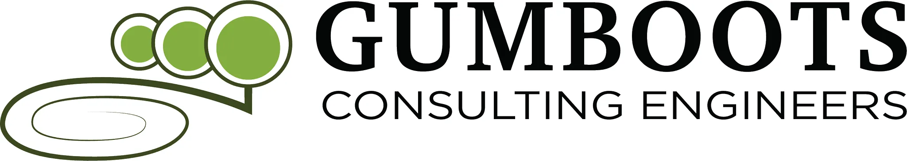
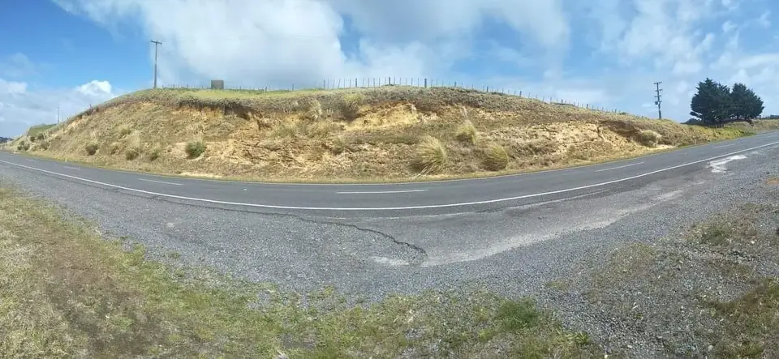

Engineering Services in Coopers Beach
Gumboots Consulting Engineers provides geotechnical, TP58 wastewater, stormwater, and structural engineering services to Coopers Beach, Mangonui, Cable Bay, and the wider Doubtless Bay area. Local Far North engineering expertise for beach and lifestyle properties.
Coopers Beach Engineering Specialists
Coopers Beach is one of the Far North's most popular beachside communities — a long sandy stretch on Doubtless Bay with a growing number of permanent residents and holiday home owners. Development at Coopers Beach presents specific engineering challenges driven by the coastal environment: sandy soils, proximity to the foreshore, and the absence of reticulated services for most properties.
Gumboots Consulting Engineers has significant experience with Coopers Beach engineering. We understand the beach sands that characterise the foreshore lots, the transition to clay soils on properties behind the first dune line, and the wastewater design challenges that come with tight lot sizes and sensitive coastal drainage. Our TP58 assessments are designed for Coopers Beach's specific soil profile and FNDC's requirements.
Whether you're building a new home on a Coopers Beach section, renovating a beachside bach, or developing a lifestyle block further inland, our team provides fast, accurate, and council-compliant engineering from our Kerikeri base.
All Engineering Services in Coopers Beach
Click a service for detailed information about our work in Coopers Beach
Engineering in Coopers Beach — Local Context
Coopers Beach Coastal Soil Conditions
Coopers Beach sits on a long sandy tombolo bordering Doubtless Bay. The soils here are primarily aeolian and marine sands — well-sorted, free-draining coastal materials deposited over thousands of years by wind and wave action. These sandy soils have their own engineering character: good permeability (useful for wastewater soakage) but relatively low bearing capacity that must be accounted for in foundation design. Shallow groundwater tables are common, particularly on sections close to the foreshore, and this affects both wastewater disposal field sizing and foundation depth.
Behind the Coopers Beach foreshore, the coastal sands give way to mixed soils with increasing clay content as the landscape rises toward the ridges above Mangonui Harbour. Properties on this transition — common for second and third rows back from the beach — have more variable soil conditions that require site-specific investigation. Permeability decreases significantly with clay content, which changes the type of wastewater system required.
Stormwater management at Coopers Beach must account for the flat to gently sloping coastal topography and the sensitivity of Doubtless Bay. Runoff from new impervious surfaces needs to be carefully managed to avoid degrading coastal water quality. FNDC and NRC both have an interest in stormwater management for coastal properties in this area.
Far North District Council — Coopers Beach Project Requirements
Geotechnical Report Required
FNDC requires geotechnical assessment for new building at Coopers Beach. The coastal sandy soils and shallow groundwater typical of Coopers Beach sections mean site-specific investigation is essential for safe foundation design.
TP58 Wastewater Design
Coopers Beach is not connected to reticulated sewer — all properties require TP58 wastewater assessment. The sandy soils typically allow soakage-based disposal, but lot size constraints and groundwater depth must be carefully checked.
Stormwater Management
FNDC requires stormwater management for new development at Coopers Beach. The flat coastal topography and the sensitivity of Doubtless Bay mean stormwater quality management is a key focus for FNDC and NRC.
Coastal Hazard Considerations
Properties at Coopers Beach are potentially subject to coastal erosion and inundation risk under NRC coastal hazard mapping. Some sites may require coastal hazard assessment before building consent or resource consent can be granted.
Why Coopers Beach Clients Choose Gumboots
Northland Based
We are a Northland firm. We know the local geology, the council requirements, and the engineering challenges of this region better than visiting consultants from Auckland.
FNDC Council Knowledge
We understand Far North District Council’s requirements. Our reports are prepared to meet their processing standards, reducing RFI rounds and speeding up your consent.
All Disciplines, One Team
Geotech, wastewater, stormwater, structural — we cover every engineering discipline your Coopers Beach project needs. One team, one point of contact.
Fast Turnaround
Most Coopers Beach assessments can be scheduled within 48 hours, with reports within 5 working days. We know engineering timelines matter for your project.

Engineering FAQ for Coopers Beach Projects
Do I need a geotechnical assessment for building at Coopers Beach?
Yes — FNDC requires geotechnical assessments for new building at Coopers Beach. The coastal sandy soils, shallow groundwater, and potential coastal hazard zone location of many sections mean site-specific engineering assessment is important before building.
What type of wastewater system is typical for Coopers Beach?
Most Coopers Beach properties use soakage-based wastewater disposal, taking advantage of the free-draining sandy soils. However, lot size, groundwater depth, and setback requirements constrain what is achievable. We carry out the permeability testing and design the system to suit your specific section.
Is Coopers Beach in a coastal hazard zone?
Parts of Coopers Beach are within the NRC coastal hazard zone. Whether your specific section is affected depends on its location and elevation. We can quickly advise whether a coastal hazard assessment is required for your property.
How far is Coopers Beach from your Kerikeri office?
Coopers Beach is approximately 45 minutes from our Kerikeri base. We regularly service Coopers Beach, Mangonui, and the Doubtless Bay area with fast site visit turnarounds.
Can I combine geotechnical and TP58 wastewater assessment in one visit?
Yes — this is the most efficient approach for Coopers Beach sections. We combine the geotechnical investigation and the TP58 soil permeability testing in a single site visit, saving you time and reducing overall cost.
Contact Gumboots for Coopers Beach Projects
Servicing Coopers Beach, Mangonui, Cable Bay, and Doubtless Bay from our Kerikeri base. Fast response times.
Based In
Kerikeri (serves Coopers Beach)
Doubtless Bay — Far North